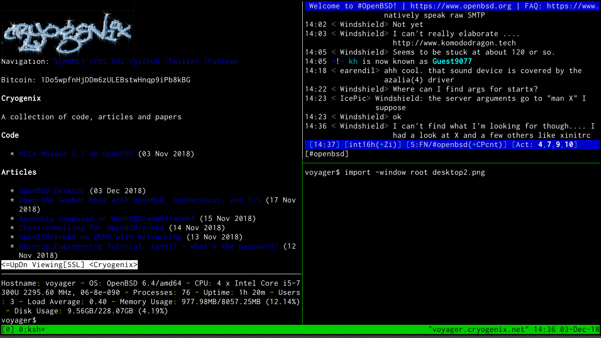

Navigation: ${HOME} /rss.xml /github /Gab
Everyone loves an OpenBSD Desktop article, don't they? So there seems very little point in me reiterating what is a relatively simple process nowadays. That said, after the install process there are a couple of things which, for me, make OpenBSD the perfect workstation operating system...

TLDR: SCROLL DOWN
In recent years, OpenBSD has become more popular as a desktop/workstation OS, which is quite surprising to many who consider it to be an arcane incarnation of BSD that's used only by tinfoil hatters, the BGP bourgeosie, and minimalist mashochists. Improved hardware support, the clean and ~perfect code style, a consistent environment, and the ease of configuration may be some reasons for people moving to the distro.
Personally, I used OpenBSD for years on bare-metal and VM servers as well as building a liveCD distro for occasional use before adopting it full-time. Out of the box, it is faster and easier to configure than FreeBSD and even most linux distros. I do still love FreeBSD, but it lacks je ne sais quoi that OpenBSD has at a base level which enables fast configuration and usability whatever you're using it on.
I use a clean, minimalist system which maximises productivity without having a bloated userland; here's how to reproduce a basic version of it. I am stuck in my ways and haven't migrated to cwm(1) yet; also, in the initial version of this article I confused cwm with fvwm because I have fvwm as my wm on another box. Normally I use rxvt-unicode over xterm with ratpoison but following feedback about using a terminal emulator not in base I have modified this article to use xterm; I've also started using a solarized build of st - but that isn't covered here.
TLDR: Start here
First, if you haven't done so already, add your user to doas.conf(5), make some performance tweaks to our filesystems in /etc/fstab(5) and grant us more memory (assuming you have at least 4GB) in login.conf(5) (from xterm in cwm):
$ su root -c 'vi /etc/doas.conf'
permit nopass keepenv yourusername
$ doas sed -i 's/rw/rw,softdep,noatime/g' /etc/fstab
$ doas sed -i 's/768M/2048M/g' /etc/login.conf
$ doas reboot
Install some packages:
pkg_add ImageMagick \
bzip2 \
git \
gnupg \
iridium \
w3m \
mpv \
inconsolata-font \
mupdf \
ratpoison \
rsync \
tor-browser \
rtorrent \
unzip
You would be surprised at how many packages in base can do the things you need... ftp(1) for example is not just an ftp client, but can be used like 'fetch' to download files over FTP, HTTP, and HTTPS. But there are a few packages I consider 'essential' listed above, some of which you may not know:
I used to start X from the console, but following a woopsie involving Xorg being setuid, OpenBSD revoked that privilege and now users should use xenodm(1) to start X and their window manager. Let's create our ratpoison session in ~/.xsession:
xset b off
xrdb -merge ~/.Xresources
xidle -delay 5 -sw -timeout 300 -program "/usr/X11R6/bin/xlock -mode qix" &
exec /usr/local/bin/ratpoison
A basic ~/.ratpoisonrc:
startup_message off
escape Super_L
bind i exec iridium
bind t exec tor-browser
bind r exec xterm -e rtorrent
bind x exec xterm -fa "xft:Inconsolata:pixelsize=16"
exec /usr/local/bin/rpws init 6 -k
exec xterm -fa "xft:Inconsolata:pixelsize=16"
As much as I like the retro SunOS look of xterm with a white background, I like to tweak the look slightly in ~/.Xresources:
*visualBell: True
xterm.loginShell: true
xterm*faceName: Inconsolata:size=16
xterm*dynamicColors: true
xterm*utf8: 2
xterm*eightBitInput: true
xterm*scrollBar: false
xterm*foreground: rgb:a8/a8/a8
xterm*background: rgb:00/00/00
*visualBell flashes the screen since we have the audible bell disabled. Perhaps not a great idea if you have certain forms of epilepsy; Keep pressing backspace for more info.
Press Ctrl-Alt-Backspace to restart X and return to Xenodm, then login again.
You should now be presented with a lovely rxvt terminal with a black background. Here are some keyboard shortcuts to help you get started:
As for tmux(1) which is included in base and a window manager (albeit for shells) in its own right, CTRL-b :split-window -h, :split-window, and the arrow keys are your friends.
Have fun!
Navigation: ${HOME}
© 2003-2018 Cryogenix | Powered by OpenBSD | Built with ssg3